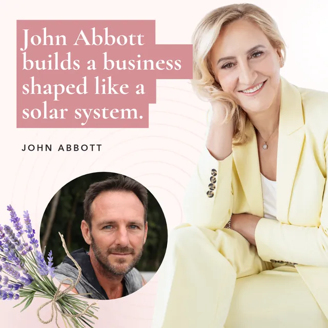

The Sincerely Show, with John Abbott
The Perfection in the Perceived Imperfection
John Abbott builds a business shaped like a solar system.

Ask John Abbott to draw his company and he draws a sun. At the centre is Centered, a heart-centred marketing and sales agency that amplifies speakers and facilitators around the world. Around it turn the planets, each division running on its own, all of them in orbit around warmth rather than command. This conversation travels the whole arc: how John built by striving, lost everything, and found freedom in the release, and why he now believes that generosity, not pressure, is the truest way to serve.
John leads Centered, working with speakers and facilitators from Tony Robbins to Michael Beckwith, helping them reach far more of the people their work was born to serve. Through the Giving Model he discovered in 2013, he invites people into a conversation rather than a transaction. He was raised largely alone on a rural South African farm during apartheid, a boy who stepped between bullies and smaller kids, who later published suppressed history on CD-ROM as Nelson Mandela walked free, and who built a multi-company empire before losing it all and finding something unexpected on the other side. In 2016, he shut everything down, committed to meditate daily until there was nothing left in him that needed to drive anything forward, and waited for the cinders to go cold so the phoenix could rise.
In this conversation John and Katherine move through the planetary image at the heart of his company, the Giving Model and what it opened, how he sees money and abundance and the practice of getting out of the way, the 2016 reset, and his closing wish: that people get to live through the eyes of a single statement.
Keep listening
 Micky HoogendijkVulnerability Is the Strength, and the Art of Creating Space to Move Forward
Micky HoogendijkVulnerability Is the Strength, and the Art of Creating Space to Move Forward
 Patricia GagicIn Gray Is Where All Potential Waits
Patricia GagicIn Gray Is Where All Potential Waits
 Carlos Delgado and Craig AlexanderHe hands young artists in the mountains a canvas, and calls that dignity.
Carlos Delgado and Craig AlexanderHe hands young artists in the mountains a canvas, and calls that dignity.
 Melissa BernsteinTurning the Chaos Within Into Light, One Life at a Time
Melissa BernsteinTurning the Chaos Within Into Light, One Life at a Time